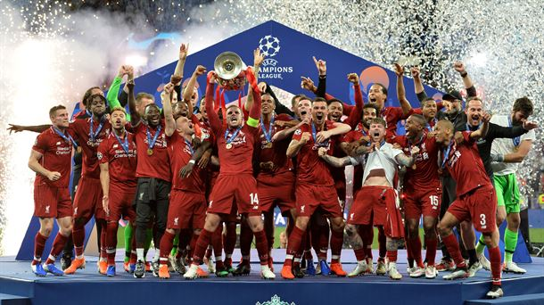
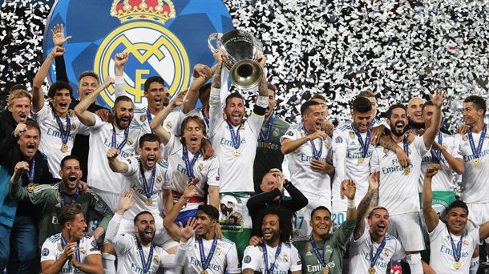

Esta sección es dedicada a los últimos campeones de la UEFA CHAMPIONS LEAGUE.
Liverpool FC
El Liverpool Football Club es un club de fútbol profesional con sede en Liverpool, Inglaterra, que disputa la Premier League, máxima competición futbolística en ese país.Es el club inglés con mayor número de títulos internacionales, con seis UEFA CHAMPIONS LEAGUE, tres copas de la UEFA y cuatro Supercopas de la UEFA. A nivel nacional, ha ganado dieciocho títulos de liga, siete Copas de Inglaterra, ocho Copas de la Liga, —siendo el equipo que más ha ganado dicha competición— quince Community Shields y una Supercopa de la Liga. La última champions que ganó el Liverpool FC fue la última edición 2018/2019, logrando la victoria contra el Tottenham Hotspur por 2-0.
Real Madrid CF
El Real Madrid Club de Fútbol, más conocido simplemente como Real Madrid, es una entidad polideportiva con sede en Madrid, España. El Real Madrid participa actualmente en LaLiga Santander, 1ra división de fútbol en España. Actualmente “Los Blancos” cuentan con 90 títulos, entre ellos, 33 Ligas, 19 copas del rey, 2 copas de la UEFA y 13 UEFA CHAMPIONS LEAGUE, ganando su última en la edición 2017/2018 de la competición. Su última final de champions la ganaron por 3-1 frente al Liverpool FC.
FC Barcelona
El Fútbol Club Barcelona, conocido popularmente como Barça,es una entidad polideportiva de Barcelona, España. Actualmente compite por la 1ra división de su país, frente a otros equipos como el Real Madrid y el Atlético de Madrid. El Barcelona es uno de los clubes con más títulos en España ya que cuenta con 26 ligas españolas, 30 copas del rey, 3 mundiales de clubes y 3 UEFA Champions League. La última champions ganada por el Barça fue en la temporada 2014/2015, venciendo al equipo italiano Juventus FC por 3-1